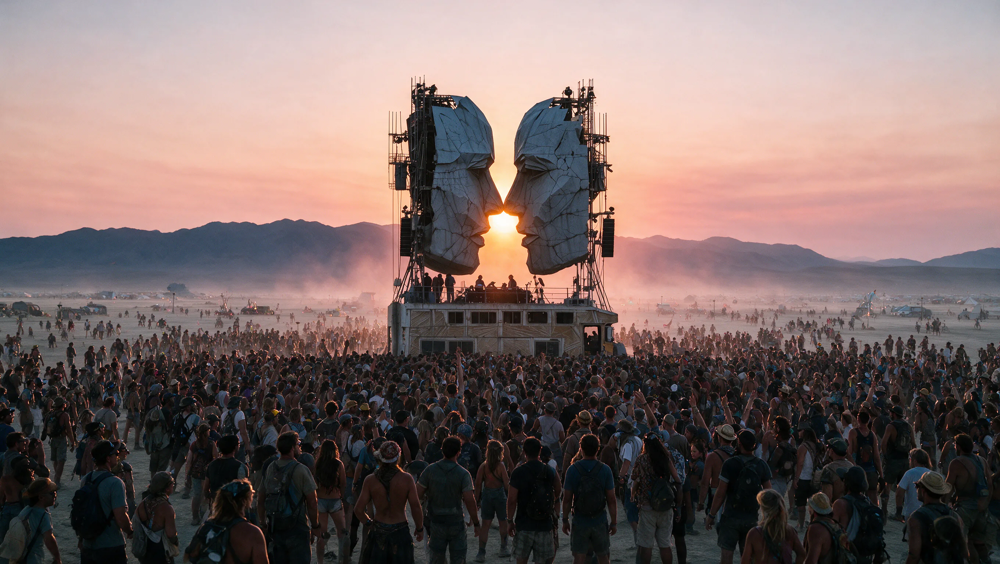
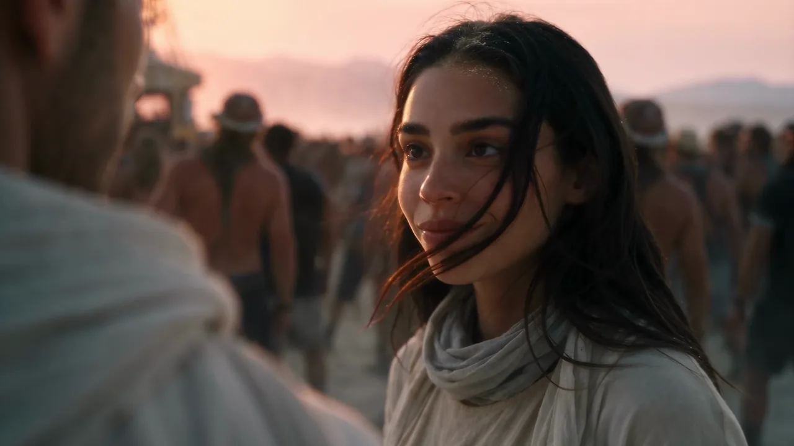
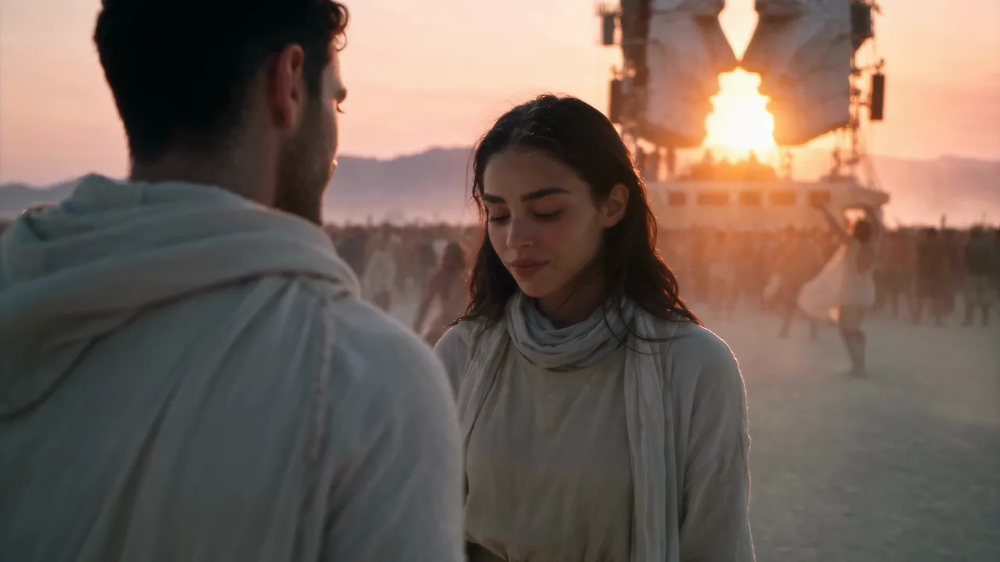
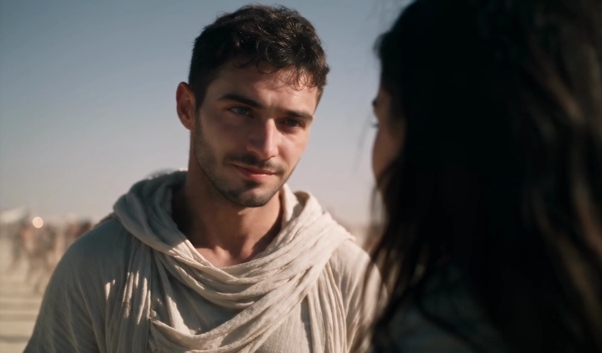
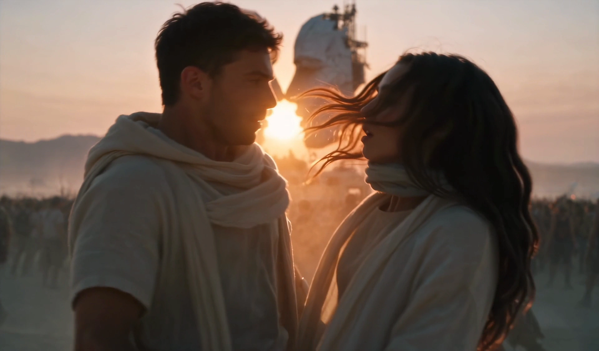
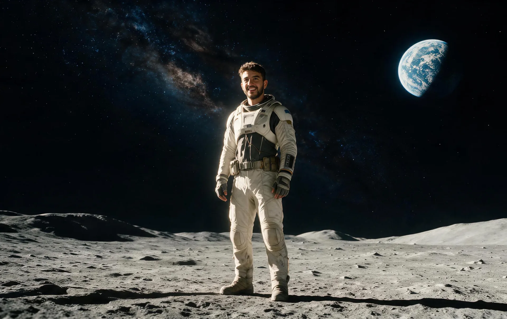

The experience
A place that never existed.
Built before the first shot, so every frame belongs to the same world.
An AI-native studio for film and motion ads.Story, craft and taste first.
DUSTLINE is an energy bar you cannot buy.
Made with AI. Directed to the final frame.
The world, cast and visual rules were built before motion began. The technology changed the production. It did not replace direction.

Built before the first shot, so every frame belongs to the same world.



03 / 03Faces, wardrobe and product lock before motion begins.

DUSTLINE / 00:04Camera, edit and grade follow the story, not the model.

About
Founder · Creative Director · Developer
I built Moona where creative direction and software development meet. I direct every project, build the systems behind the work and make the final creative call.
Custom software · Continuous R&D · Specialist AI agents
The crew
Every member of the Moona crew is a specialist AI agent, built inside the studio.
AI Crew
Six specialists across story, image, film, sound and systems.
Story & Strategy
Finds the human tension inside every brief.
Visual Development
Builds worlds. Removes what does not belong.
Cinematography
Chases the frame that feels impossible to shoot.
Editorial
Cuts until every beat feels inevitable.
Sound & Voice
Hears the film before the first cut.
Production Systems
Keeps the technology invisible and the work moving.
Four self-initiated concept films.